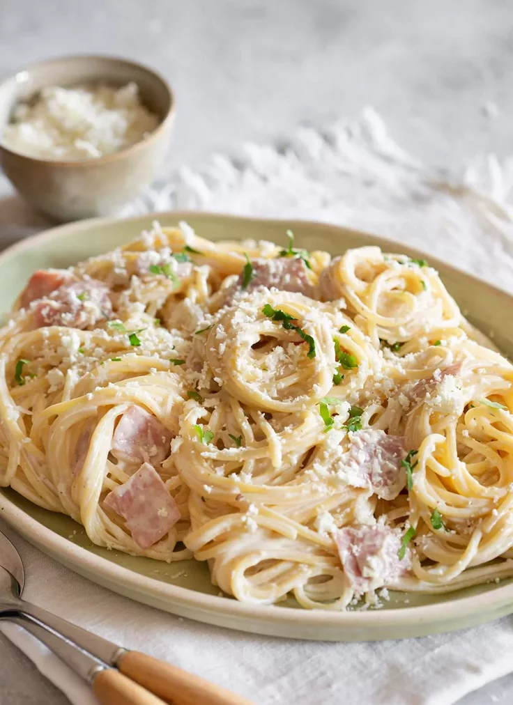

Pastas blancas (Alfredo)

Descripción
La pasta con salsa blanca, también conocida como pasta Alfredo, es una receta
clásica de la cocina italiana que destaca por su textura cremosa y su delicado sabor.
La combinación de mantequilla, crema y queso parmesano crea una salsa suave que envuelve
perfectamente cada bocado de pasta.
Es una excelente opción para una cena especial o un almuerzo rápido. Además, puede personalizarse
fácilmente añadiendo pollo a la parrilla, champiñones, tocino o camarones para darle un toque diferente.
Ingredientes
- 400g de fettuccine o pasta de tu preferencia
- 2 cucharadas de mantequilla
- 2 dientes de ajo picados
- 1 taza de crema de leche
- 1 taza de queso parmesano rallado
- Sal al gusto
- Pimienta negra recién molida
- Perejil fresco picado (opcional)
- Pechuga de pollo a la parrilla en tiras (opcional)
Pasos
- Cocinar la pasta en abundante agua con sal hasta que esté al dente
- Derretir la mantequilla en una sartén a fuego medio.
- Sofreír el ajo durante uno o dos minutos sin dejar que se queme.
- Agregar la crema de leche y cocinar durante unos minutos, removiendo constantemente.
- Incorporar el queso parmesano poco a poco hasta obtener una salsa cremosa y homogénea.
- Sazonar con sal y pimienta al gusto.
- Añadir la pasta cocida y mezclar hasta que quede completamente cubierta por la salsa
- Servir caliente, decorando con perejil fresco y más queso parmesano si se desea.
Página Principal